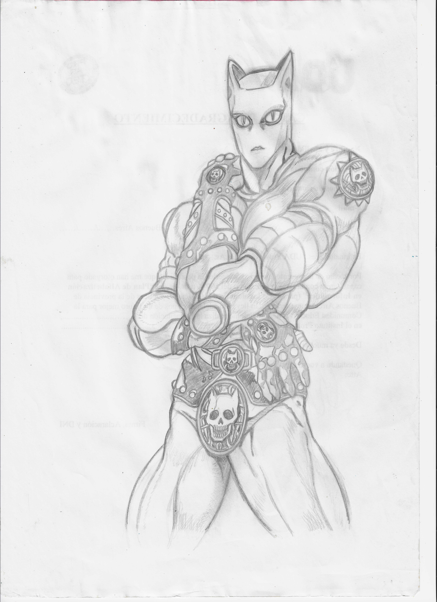
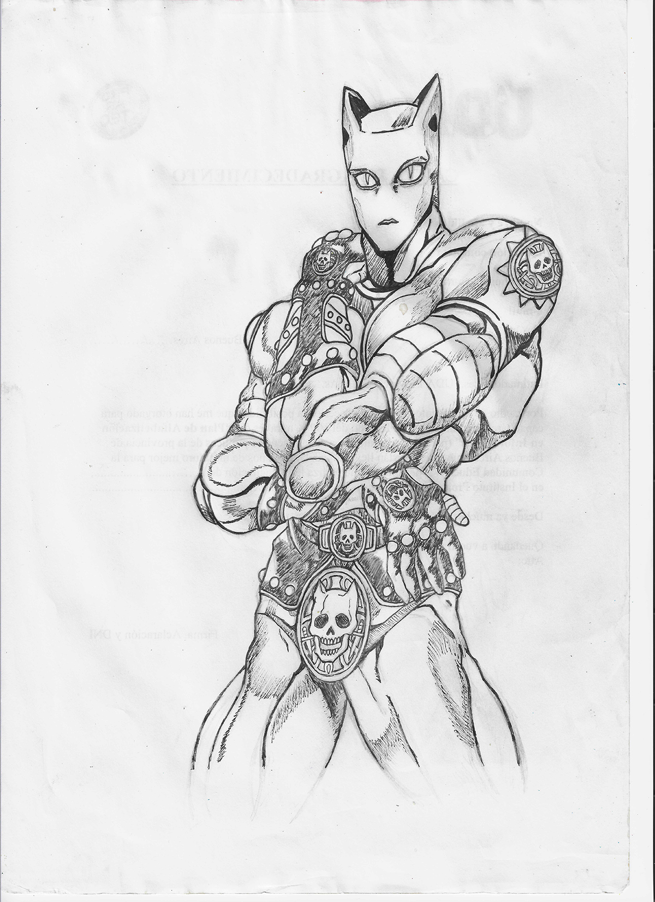
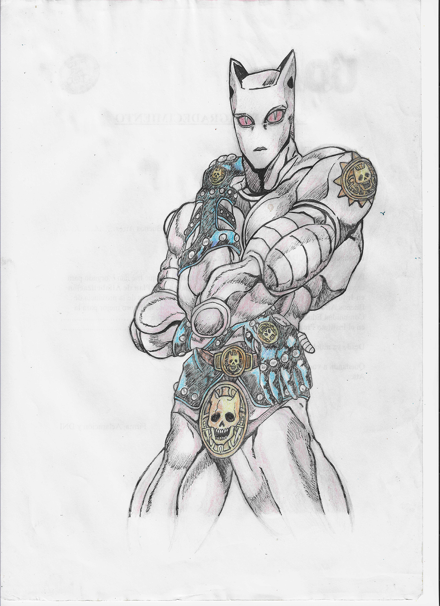
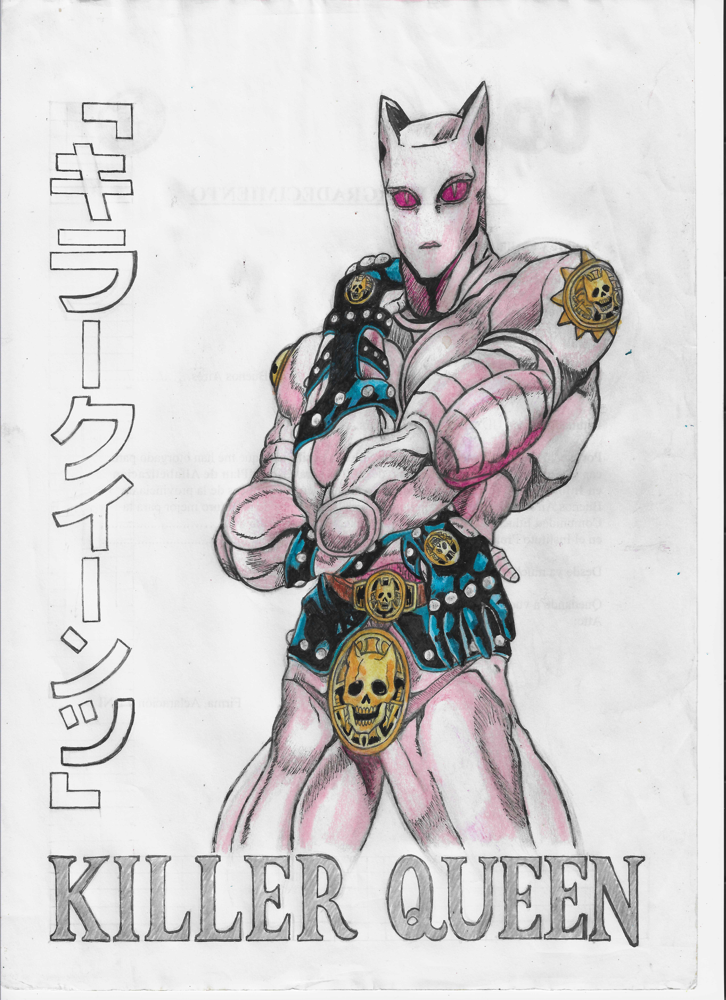

Implementacion de Imagenes
En este apartado veremos que cuales son los elementos que podemos utilizar de manera visual dentro de una pagina web, su caracteristicas y manipulacion correspondiente tanto con los lenguajes HTML y CSS.
Etiqueta de Imagen
Para incorporar este tipo de elemento dentro de una pagina debemos utilizar la etiqueta <img> , debemos completar los atributos src="..." para indicar donde se encuentra el archivo y alt="..." para generar un texto alternativo, en caso que la imagen no este disponible; ademas se utiliza para la accesibilidad y los motores de busqueda.




Para facilitar el uso de este tipo de elementos es necesario seguir algunos consejos que nos ahorraran futuros inconvenientes, especialmente al momento de subir los archivos al servidor. En la siguiente lista tendremos el detalle de cada una de estas "reglas"
-
Evitar el uso de caracteres especiales como por ejemplor el espacio, ya que seria traducido al conjunto %20 no pudiendo encontrar el archivo. Es conveniente utilizar guiones (-_) para evitar este problema.
-
Utilizar nombres simples y descriptivos para encontrar los archivos con mayor facilidad y evitar los nombres automatizados en caso que debamos cargar manualmente los mismos.
-
Implementar solamente minusculas para los nombres, ya que los servidores web son caseSensitive y distinguen entre mayusculas y minusculas. Ademas se reduce, de esta manera, el margen de error.